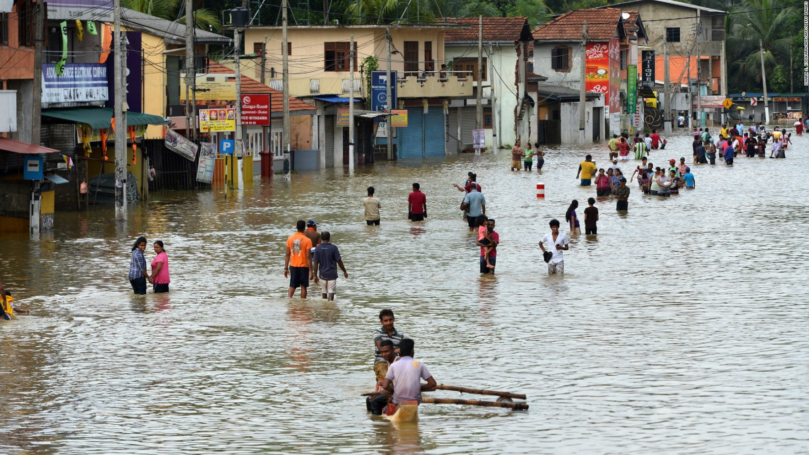

While it is never possible to prevent a disaster, the damage can be minimized
through timely preparation.
As such, every natural disaster has its own set of precautions to be
taken, which must be followed to save precious lives.
Here are a few precautions one must take to save their lives and that of others during
natural disasters.
The shifting of tectonic plates causes earthquakes under the earth’s crust, and it is responsible
for mass destruction. When faced with an earthquake, these tips can be of use:
If you are indoors,
• Take cover under a sturdy table or other pieces of furniture, and hold on until the shaking stops.
• Stay away from glass, windows, outside doors and walls, and anything that could fall, such as lighting fixtures or furniture.
• Stay inside until the shaking stops, and it is safe to go outside. Most injuries occur to people trying to move a different location inside the building or try to leave.
• Do not use the elevators.
If you are outdoors,
• Stay away from buildings, streetlights, and utility wires.
•Stand in open ground until the shaking stops. It’s dangerous
to stay directly outside buildings, at exits, and alongside exterior
walls. Ground movement during an earthquake
is seldom the direct cause
of death or injury. Most earthquake-related casualties result from collapsing walls,
flying glass, and falling objects.
Tsunamis are a series of enormous ocean waves caused by earthquakes, underwater landslides,
or volcanic eruptions. Tsunami waves range from tens to hundreds of feet tall
and can travel
twenty to thirty miles per hour. When faced with this phenomenon, these tips are to be
followed:
• Turn on your radio/TV to learn and follow the precautionary instructions during a tsunami warning, primarily when you reside near a coastal area.
• Move inland to higher ground immediately and stay there.
• Check for a noticeable recession in water away from the shoreline as this is nature’s tsunami warning and should be heeded. It would help if you moved away immediately.
• Please stay away from flooded and damaged areas until officials say it is safe to return.
• Please keep yourself away from debris in the water; it may pose a safety hazard to boats and people.
Cyclones are tropical storms, caused by atmospheric disturbances around a low-pressure area.
Cyclones are accompanied by strong winds, moving at a speed of sixty-two kmph
or more.When faced with a hurricane, keep these tips in mind:
• Be alert to changing weather conditions.
• Listen to radio/TV for the latest information.
• Look for approaching storms.
• Look for the following warning signs: – Dark, often greenish sky – Large hailstones, a large,
dark, low-lying cloud (particularly if rotating), roars, similar to a freight train.
• If you see approaching storms or any of the danger signs, be prepared to take shelter immediately.
• If you are under a tornado warning, seek shelter immediately. NOTE: In places where you have designated cyclone shelters, take refuge there.
Floods are among the earth’s most common and dangerous natural hazards, formed due to a flow
of water on areas of land that are usually dry. Excessive rain, damage to nearby
dams, and tsunamis are some of its causes. When faced with flooding, these tips are to be followed:
• Do not attempt to walk, swim, or drive through the floods. Floodwater contains debris and contamination and can also be deadly due to fallen electrical lines in the water.
• Stay clear of bridges over fast-moving water.
• Keep an eye out for evacuation alerts.
• Move to higher ground.
• If your vehicle is trapped in flood and water starts filling inside the car, seek refuge on the roof.

In addition to it, it is essential to stay calm during times of disaster. And while you do that, always keep
helpline numbers 102 and 108 handy to reach out to emergency medical services
providers like Ziqitza HealthCare Limited (ZHL) when aid is needed.
Ziqitza HealthCare is a leading emergency healthcare company operating 108 and
102 Ambulances across different across different states of India.
It has helped rescue and save the lives of people from natural
disasters since its inception in 2005 states of India.